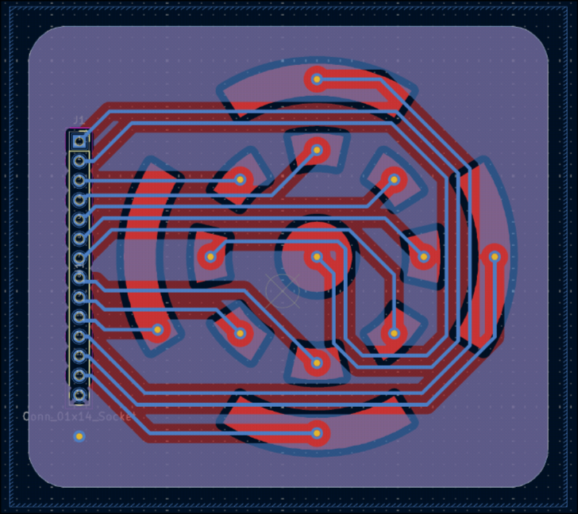
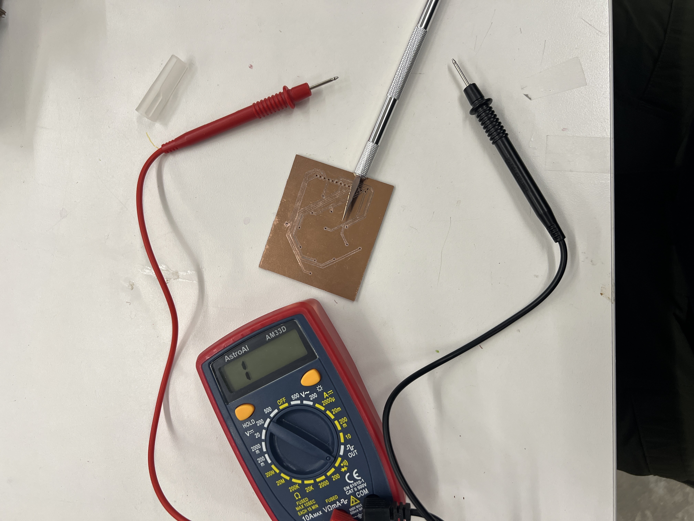
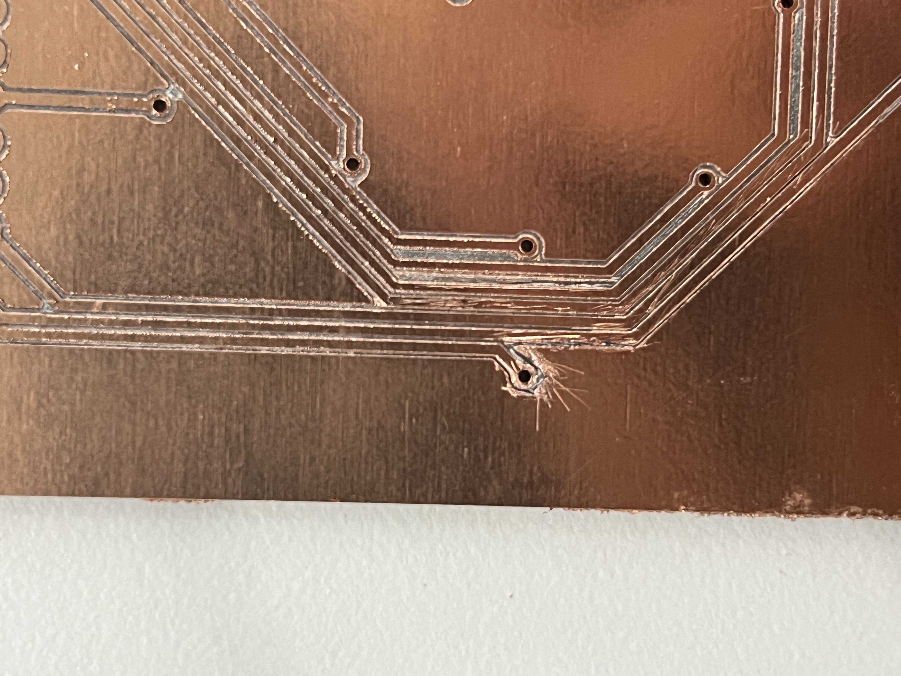
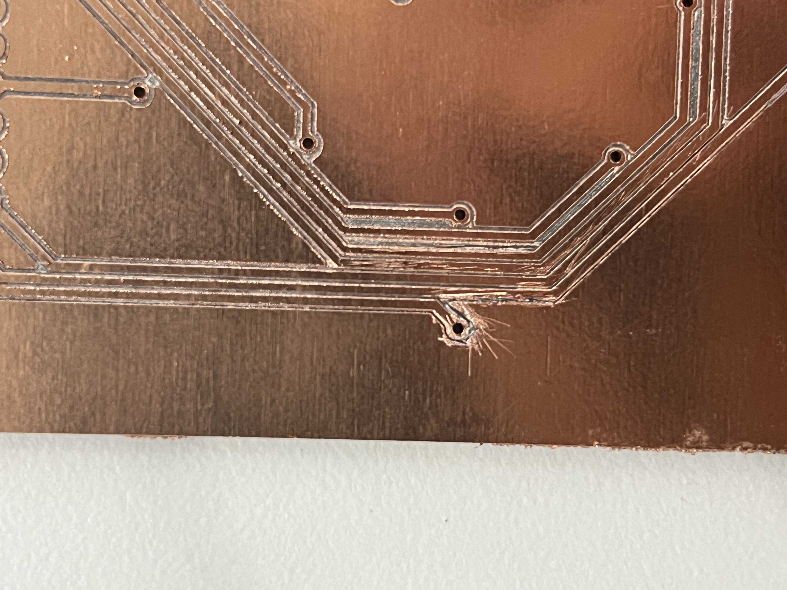

Week 8: CNC
Since I was working on my MVP on CNC week, I decided to make up this assignment by prototyping different capacitive sensor wheels.
Design
I designed each capacitive wheel prototype in KiCad. I began with a octogonal design but later switched to circles since they were more aesthetically pleasing and more intuitive to use.
Final iteration
Manufacturing
Here's exactly what you need to do to mill a double sided PCB in the shop:
After sending instructions to the machine, wait 5 SECONDS before opening the lid. If you don't you'll need to restart the machine.
- Generate gerber and drill files with front copper, back copper, and edge cuts.
- Go to gerber2img. Select black and white.
- Upload the
[...]-PTH.drland[...]-Edge_Cuts.gbrsimultaneously and lock the dimensions and orign - Download this render.
- Don't refresh. Upload the front copper and download the render.
- Upload the back copper and download the render.
- Install flip-pcb using the instruction in the git repository.
- Launch flip pcb.
- Upload the edge/drill png to "Outline".
- Upload the front png to "Front Copper".
- Upload the back png to "Back Copper".
- You shouldn't need to change the drill size. Hit "generate boards" and upload them to a USB.
- Go to the PCB CNC machine next to the soldering station. Using double sided tape, tape down a FR1 board. Try your best to align it to the close left corner. Make sure its as flat as possible.
- Turn on your CNC machine and connect to it on bitrunner using the button on the top right corner.
- Upload your front copper PNG by dragging it in.
- Swap the bit in the machine for a V bit using the allen key attached to the machine via magnet. You shouldn't need a lot of force to tighen the bit. Give it a little tug to be secure. Put it a little high, you'll need to drop it to level the machine.
- Using the tool controls, move to the tool to a couple millimeters away from the close left corner.
- Click "Move Job to Pointer". This point is now your origin.
- Using the tool controls, try to get the bit to be just above the FR1 board.
- Loosen the bit and let it drop to your piece. These bits are very delicate so you shouldn't let them drop too far or hard. However, don't press the bit into the FR1 board. The bit is leveled when it comfortably rests ontop of the board. Retighten the bolt.
- Make sure you move the bit up when moving the tool around from now on. Make sure that your PCB fits within the board (move the red pointer to and use "Move Tool to Pointer" to check each corner of ur PCB)
- Select the "Circuit Traces (1/64 in)" preset and click "Generate Toolpath".
- Click "Start Cut".
- Using the Z controls, make sure that the bit is just touching the material. This should be at the Z height you found when you leveled the bit with the dropping earlier.
- Start the cut and wait for it to finish.
- DO NOT REFRESH THE PAGE. Drag in your front outline file.
- Swap the bit for a 32 mill drilling bit (not V shaped) using the allen key again. It may be helpful to move the toolhead up.
- Move the bit as close to an UNCUT piece of copper as possible. This does not have to be at the origin.
- Level the bit using the dropping method as described above.
- Use the "Circut Outline (1/32 in)" preset and click generate toolpaths. It may be necessary to lower the tool diameter very slightly if some of your holes aren't being drilled.
- Click "Start Cut". Make sure your bit is just touching the material again.
- Start the cut and wait once more.
- Now, if you have a double sided PCB (which you should if you did the Flip PCB step), pry off the cut-out PCB (NOT the outside material). Remove the tape on the bottom side. Leave the rest of the FR1 board on the machine for alignment purposes.
- Flip the PCB horizontally making sure that things align with the PCB you're about to cut. There should be some flaps on the edges of the cutout PCB and leftover material that will help you align your PCB
- Tape it down.
- Now, repeat the steps for the front of the board (dragging in image, swapping and leveling bits, generating toolpaths with presets) for the back copper and back outline of.
- After that, your double sided PCB should be done!
These PCBs were milled in the lab using the CNC mill for PCBs. I was able to use gerber2img and Bobby's flip pcb script to generate the necessary PNGs for milling. Double sided PCBs require a little extra work since the PCB must aligned properly after flipping.
Fortunately, the process is quite straightforward thanks to the tools developed for this process. I then used BitRunner to generate the toolpaths to actually mill them.
Post Processing
For two iterations, I needed to spend quite a bit of time scraping off copper that wasn't properly removed by the CNC. A multimeter really helped with this process. Even though I increased the clearance between traces, if the FR1 board isn't perfectly flat, there ends up being regions with some leftover copper that can cause shorts.
 

Then, I had to solder my own vias. This was by far the most tedious thing I've ever soldered. With no soldermask to save me, this really tested my soldering skills and patience. Again, I had to use a multimeter to ensure that there were no shorts. The issues that happened in my first and second iteration motivated me to increase track clearances in my third iteration.

First iteration vs. second iteration, I definetly got better!
Reflection
I'm pretty happy with how my self-milled PCBs turned out. Being able to mill my own PCBs makes iteration a lot quicker, even if its only for simple parts. My third iteration worked great for my ipod prototype and I used the exact same design in my final PCB. I definetly know I'll be doing a lot more of this in the future since its always a good idea to test a design before spending hundreds of dollars on shipping and tarrifs for JLCPCB to make it.